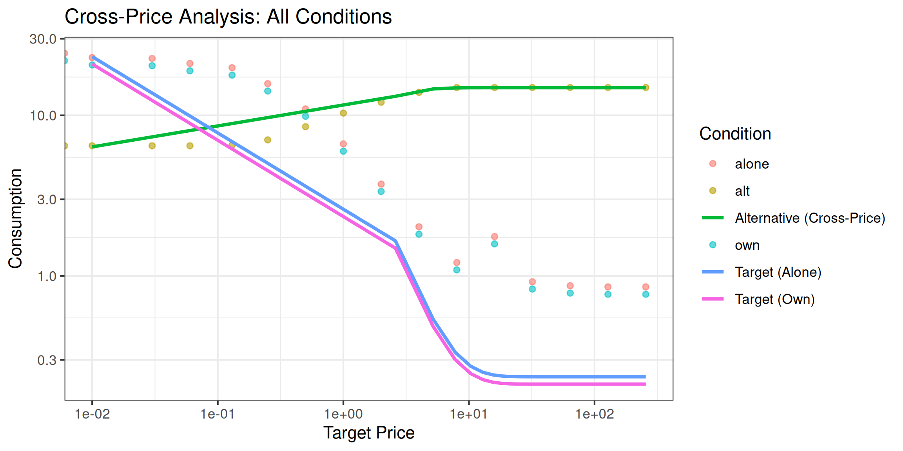
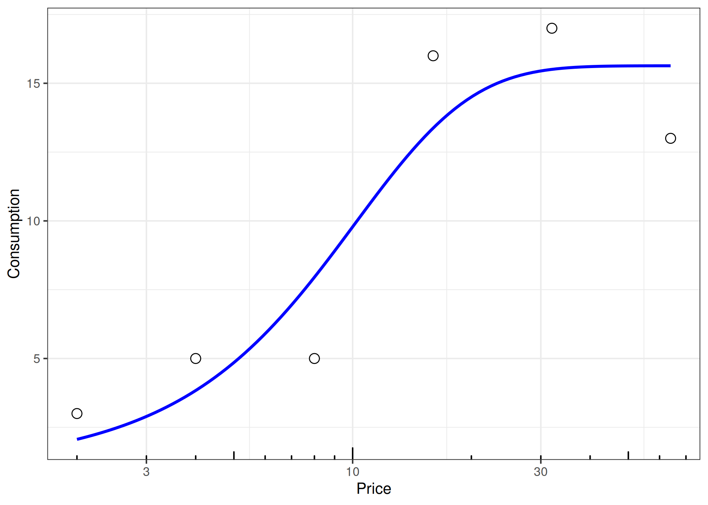
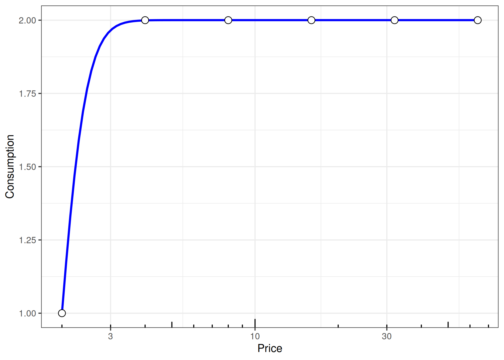
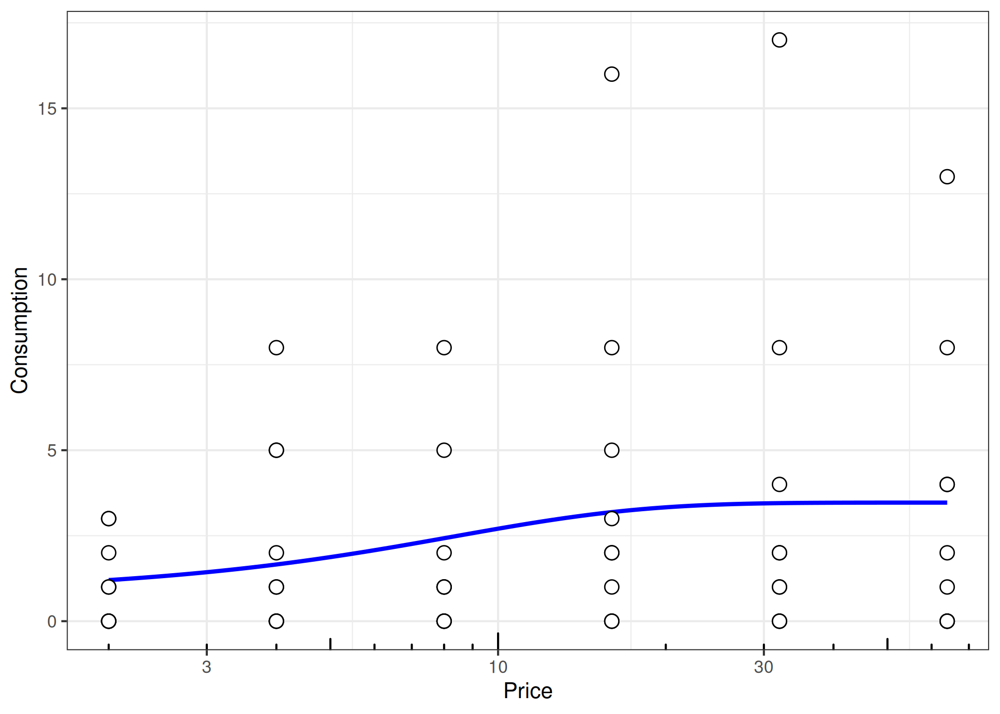
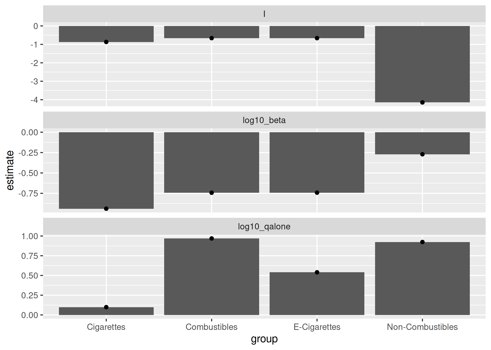
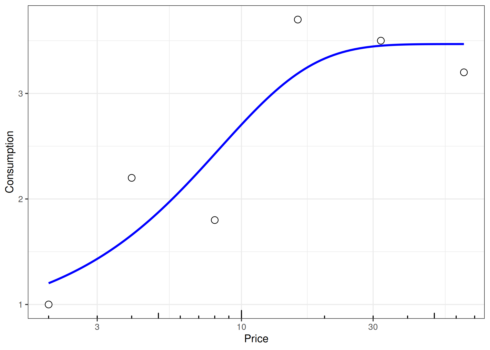
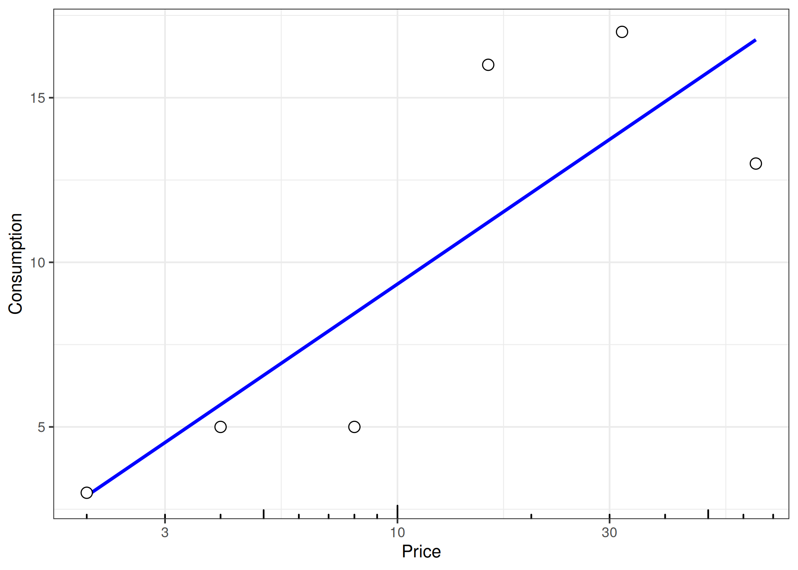
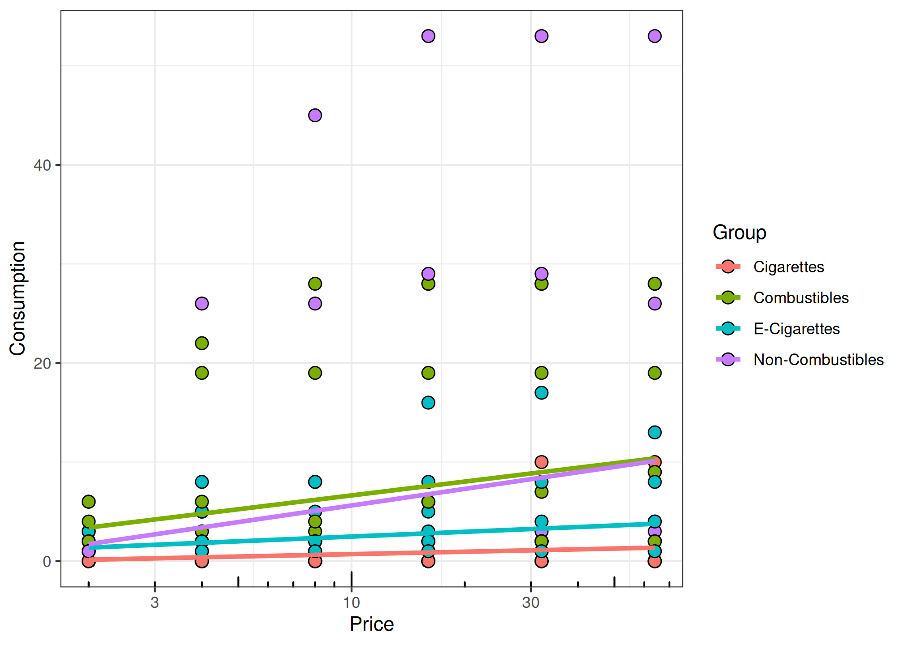
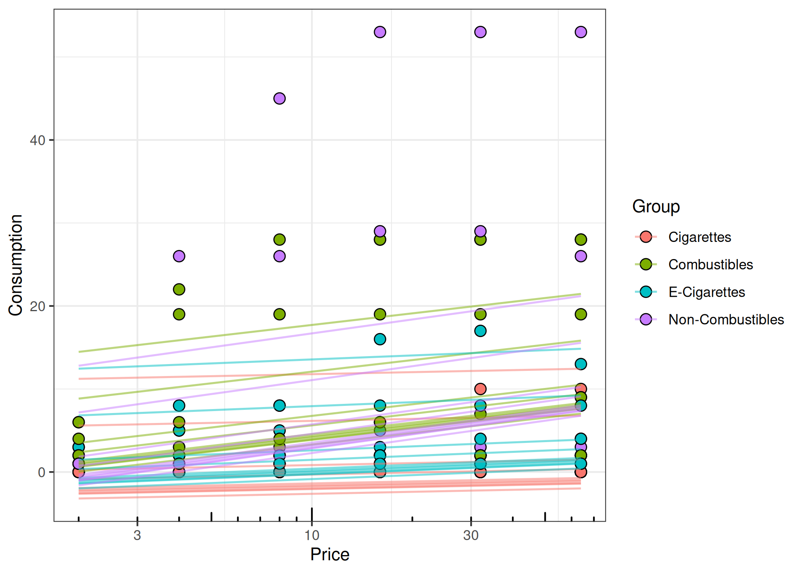
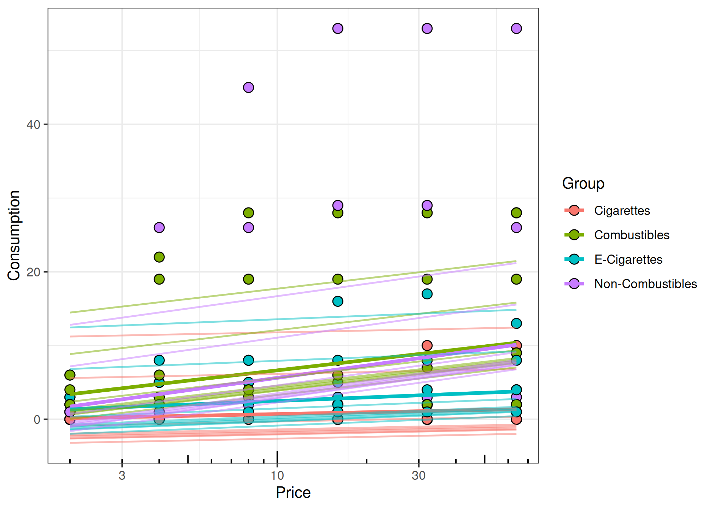

How to Use Cross-Price Demand Model Functions
Brent Kaplan
2026-02-21
Source:vignettes/cross-price-models.Rmd
cross-price-models.RmdData Structure
glimpse(etm)
#> Rows: 240
#> Columns: 5
#> $ id <dbl> 1, 1, 1, 1, 1, 1, 1, 1, 1, 1, 1, 1, 1, 1, 1, 1, 1, 1, 1, 1, 1, …
#> $ x <dbl> 2, 4, 8, 16, 32, 64, 2, 4, 8, 16, 32, 64, 2, 4, 8, 16, 32, 64, …
#> $ y <dbl> 0, 0, 0, 0, 0, 0, 1, 2, 2, 2, 2, 2, 3, 5, 5, 16, 17, 13, 0, 0, …
#> $ target <chr> "alt", "alt", "alt", "alt", "alt", "alt", "alt", "alt", "alt", …
#> $ group <chr> "Cigarettes", "Cigarettes", "Cigarettes", "Cigarettes", "Cigare…Typical columns: - id: participant identifier
x: alternative product pricey: consumption leveltarget: condition type (e.g., “alt”)group: product category
Complete Cross-Price Analysis Workflow
This section demonstrates a complete analysis workflow using data
that contains multiple experimental conditions: target consumption when
the alternative is absent (alone), target consumption when
the alternative is present (own), and alternative
consumption as a function of target price (alt).
Loading the cp Dataset
# Load the cross-price example dataset
data("cp", package = "beezdemand")
# Examine structure
glimpse(cp)
#> Rows: 48
#> Columns: 5
#> $ id <dbl> 1, 1, 1, 1, 1, 1, 1, 1, 1, 1, 1, 1, 1, 1, 1, 1, 1, 1, 1, 1, 1, …
#> $ x <dbl> 0.00, 0.01, 0.03, 0.06, 0.13, 0.25, 0.50, 1.00, 2.00, 4.00, 8.0…
#> $ y <dbl> 24.3430657, 22.8832117, 22.6058394, 21.0291971, 19.7810219, 15.…
#> $ target <chr> "alone", "alone", "alone", "alone", "alone", "alone", "alone", …
#> $ group <chr> "cigarettes", "cigarettes", "cigarettes", "cigarettes", "cigare…
# View conditions
table(cp$target)
#>
#> alone alt own
#> 16 16 16The cp dataset contains:
- alone: Target commodity (cigarettes) consumption when alternative is not available
- own: Target commodity consumption when alternative is available
- alt: Alternative commodity (e-cigarettes) consumption as a function of target price
Note that x represents the target commodity
price throughout all conditions.
Step 1: Fit Target Demand (Alone Condition)
First, we fit a standard demand curve to the target commodity when the alternative is absent:
# Filter to alone condition
alone_data <- cp |>
dplyr::filter(target == "alone")
# Fit demand curve (modern interface)
fit_alone <- fit_demand_fixed(
data = alone_data,
equation = "koff",
k = 2
)
#> [1] "Data casted as data.frame"
# View results
fit_alone
#>
#> Fixed-Effect Demand Model
#> ==========================
#>
#> Call:
#> fit_demand_fixed(data = alone_data, equation = "koff", k = 2)
#>
#> Equation: koff
#> k: fixed (2)
#> Subjects: 1 ( 1 converged, 0 failed)
#>
#> Use summary() for parameter summaries, tidy() for tidy output.Step 2: Fit Target Demand (Own Condition)
Next, fit the same demand model to target consumption when the alternative is present:
# Filter to own condition
own_data <- cp |>
dplyr::filter(target == "own")
# Fit demand curve
fit_own <- fit_demand_fixed(
data = own_data,
equation = "koff",
k = 2
)
#> [1] "Data casted as data.frame"
# View results
fit_own
#>
#> Fixed-Effect Demand Model
#> ==========================
#>
#> Call:
#> fit_demand_fixed(data = own_data, equation = "koff", k = 2)
#>
#> Equation: koff
#> k: fixed (2)
#> Subjects: 1 ( 1 converged, 0 failed)
#>
#> Use summary() for parameter summaries, tidy() for tidy output.Step 3: Fit Cross-Price Model (Alt Condition)
Finally, fit the cross-price model to alternative consumption as a function of target price:
# Filter to alt condition
alt_data <- cp |>
dplyr::filter(target == "alt")
# Fit cross-price model
fit_alt <- fit_cp_nls(
dat = alt_data,
equation = "exponentiated",
return_all = TRUE
)
# View results
summary(fit_alt)
#> Cross-Price Demand Model Summary
#> ================================
#>
#> Model Specification:
#> Equation type: exponentiated
#> Functional form: y ~ (10^log10_qalone) * 10^(I * exp(-(10^log10_beta) * x))
#> Fitting method: nls_multstart
#> Method details: Multiple starting values optimization with nls.multstart
#>
#> Coefficients:
#> Estimate Std. Error t value Pr(>|t|)
#> log10_qalone 1.1720228 0.0025378 461.8250 < 2.2e-16 ***
#> I -0.3712609 0.0066765 -55.6075 < 2.2e-16 ***
#> log10_beta -0.1271127 0.0217331 -5.8488 5.696e-05 ***
#> ---
#> Signif. codes: 0 '***' 0.001 '**' 0.01 '*' 0.05 '.' 0.1 ' ' 1
#>
#> Confidence Intervals:
#> 2.5 % 97.5 %
#> log10_qalone 1.1665 1.17751
#> I -0.3857 -0.35684
#> log10_beta -0.1741 -0.08016
#>
#> Fit Statistics:
#> R-squared: 0.9973
#> AIC: 1.3
#> BIC: 4.39
#>
#> Parameter Interpretation (natural scale):
#> qalone (Q_alone): 14.86 - consumption at zero alternative price
#> I: -0.3713 - interaction parameter (substitution direction)
#> beta: 0.7463 - sensitivity parameter (sensitivity of relation to price)
#>
#> Optimizer parameters (log10 scale):
#> log10_qalone: 1.172
#> log10_beta: -0.1271fit_cp_nls() uses a log10-parameterized optimizer
internally (for numerical stability), but predict() returns
y_pred on the natural y scale. For the
"exponential" form, predictions may also include
y_pred_log10.
Comparing Results Across Conditions
# Extract key parameters for each condition
coef_alone <- coef(fit_alone)
Q0_alone <- coef_alone$estimate[coef_alone$term == "q0"]
Alpha_alone <- coef_alone$estimate[coef_alone$term == "alpha"]
coef_own <- coef(fit_own)
Q0_own <- coef_own$estimate[coef_own$term == "q0"]
Alpha_own <- coef_own$estimate[coef_own$term == "alpha"]
comparison <- data.frame(
Condition = c("Alone (Target)", "Own (Target)", "Alt (Cross-Price)"),
Q0_or_Qalone = c(
Q0_alone,
Q0_own,
coef(fit_alt)["qalone"]
),
Alpha_or_I = c(
Alpha_alone,
Alpha_own,
coef(fit_alt)["I"]
)
)
comparison
#> Condition Q0_or_Qalone Alpha_or_I
#> 1 Alone (Target) 23.54818 0.01406589
#> 2 Own (Target) 21.19336 0.01562876
#> 3 Alt (Cross-Price) NA -0.37126092Interpretation:
- Comparing
Q0between alone and own conditions shows how the presence of an alternative affects baseline consumption of the target commodity - The
Iparameter from the cross-price model indicates whether the products are substitutes (I < 0) or complements (I > 0)
Combined Visualization
# Create prediction data
x_seq <- seq(0.01, max(cp$x), length.out = 100)
# Get demand predictions for each condition
pred_alone <- predict(fit_alone, newdata = data.frame(x = x_seq))$.fitted
pred_own <- predict(fit_own, newdata = data.frame(x = x_seq))$.fitted
# Cross-price model predictions (always on the natural y scale)
pred_alt <- predict(fit_alt, newdata = data.frame(x = x_seq))$y_pred
# Combine into plot data
plot_data <- data.frame(
x = rep(x_seq, 3),
y = c(pred_alone, pred_own, pred_alt),
Condition = rep(c("Target (Alone)", "Target (Own)", "Alternative (Cross-Price)"), each = length(x_seq))
)
# Plot
ggplot() +
geom_point(data = cp, aes(x = x, y = y, color = target), alpha = 0.6) +
geom_line(data = plot_data, aes(x = x, y = y, color = Condition), linewidth = 1) +
scale_x_log10() +
scale_y_log10() +
labs(
x = "Target Price",
y = "Consumption",
title = "Cross-Price Analysis: All Conditions",
color = "Condition"
) +
theme_bw()
Checking Unsystematic Data
etm |>
dplyr::filter(group %in% "E-Cigarettes" & id %in% 1)
#> # A tibble: 6 × 5
#> id x y target group
#> <dbl> <dbl> <dbl> <chr> <chr>
#> 1 1 2 3 alt E-Cigarettes
#> 2 1 4 5 alt E-Cigarettes
#> 3 1 8 5 alt E-Cigarettes
#> 4 1 16 16 alt E-Cigarettes
#> 5 1 32 17 alt E-Cigarettes
#> 6 1 64 13 alt E-Cigarettes
unsys_one <- etm |>
filter(group %in% "E-Cigarettes" & id %in% 1) |>
check_systematic_cp()
unsys_one$results
#> # A tibble: 1 × 15
#> id type trend_stat trend_threshold trend_direction trend_pass bounce_stat
#> <chr> <chr> <dbl> <dbl> <chr> <lgl> <dbl>
#> 1 1 cp NA 0.025 up NA 0.2
#> # ℹ 8 more variables: bounce_threshold <dbl>, bounce_direction <chr>,
#> # bounce_pass <lgl>, reversals <int>, reversals_pass <lgl>, returns <int>,
#> # n_positive <int>, systematic <lgl>
unsys_one_lnic <- lnic |>
filter(
target == "adjusting",
id == "R_00Q12ahGPKuESBT"
) |>
check_systematic_cp()
unsys_one_lnic$results
#> # A tibble: 1 × 15
#> id type trend_stat trend_threshold trend_direction trend_pass bounce_stat
#> <chr> <chr> <dbl> <dbl> <chr> <lgl> <dbl>
#> 1 R_00Q… cp NA 0.025 down NA 0
#> # ℹ 8 more variables: bounce_threshold <dbl>, bounce_direction <chr>,
#> # bounce_pass <lgl>, reversals <int>, reversals_pass <lgl>, returns <int>,
#> # n_positive <int>, systematic <lgl>
unsys_all <- etm |>
group_by(id, group) |>
nest() |>
mutate(
sys = map(data, check_systematic_cp),
results = map(sys, ~ dplyr::select(.x$results, -id))
) |>
select(-data, -sys) |>
unnest(results)
knitr::kable(
unsys_all |>
group_by(group) |>
summarise(
n_subjects = n(),
pct_systematic = round(mean(systematic, na.rm = TRUE) * 100, 1),
.groups = "drop"
),
caption = "Systematicity check by product group (ETM dataset)"
)| group | n_subjects | pct_systematic |
|---|---|---|
| Cigarettes | 10 | 90 |
| Combustibles | 10 | 70 |
| E-Cigarettes | 10 | 80 |
| Non-Combustibles | 10 | 90 |
Demonstration from Rzeszutek et al. (under review)
Low Nicotine Study (Kaplan et al., 2018)
unsys_all_lnic <- lnic |>
filter(target == "fixed") |>
group_by(id, condition) |>
nest() |>
mutate(
sys = map(
data,
check_systematic_cp
)
) |>
mutate(results = map(sys, ~ dplyr::select(.x$results, -id))) |>
select(-data, -sys) |>
unnest(results) |>
arrange(id)
knitr::kable(
unsys_all_lnic |>
group_by(condition) |>
summarise(
n_subjects = n(),
pct_systematic = round(mean(systematic, na.rm = TRUE) * 100, 1),
.groups = "drop"
),
caption = "Systematicity check by condition (Low Nicotine study, Kaplan et al., 2018)"
)| condition | n_subjects | pct_systematic |
|---|---|---|
| 100% | 67 | 97.0 |
| 2% | 57 | 91.2 |
| 2% NegFrame | 59 | 91.5 |
Unpublished Cannabis and Cigarette Data
unsys_all_can_cig <- can_cig |>
filter(target %in% c("cannabisFix", "cigarettesFix")) |>
group_by(id, target) |>
nest() |>
mutate(
sys = map(data, check_systematic_cp),
results = map(sys, ~ dplyr::select(.x$results, -id))
) |>
select(-data, -sys) |>
unnest(results) |>
arrange(id)
knitr::kable(
unsys_all_can_cig |>
group_by(target) |>
summarise(
n_subjects = n(),
pct_systematic = round(mean(systematic, na.rm = TRUE) * 100, 1),
.groups = "drop"
),
caption = "Systematicity check by target (Cannabis/Cigarettes, unpublished data)"
)| target | n_subjects | pct_systematic |
|---|---|---|
| cannabisFix | 99 | 67.7 |
| cigarettesFix | 99 | 77.8 |
In Progress Experimental Tobacco Marketplace Data
unsys_all_ongoing_etm <- ongoing_etm |>
# one person is doubled up
distinct() |>
filter(target %in% c("FixCig", "ECig")) |>
group_by(id, target) |>
nest() |>
mutate(
sys = map(data, check_systematic_cp),
results = map(sys, ~ dplyr::select(.x$results, -id))
) |>
select(-data, -sys) |>
unnest(results)
knitr::kable(
unsys_all_ongoing_etm |>
group_by(target) |>
summarise(
n_subjects = n(),
pct_systematic = round(mean(systematic, na.rm = TRUE) * 100, 1),
.groups = "drop"
),
caption = "Systematicity check by target (Ongoing ETM data)"
)| target | n_subjects | pct_systematic |
|---|---|---|
| ECig | 47 | 83.0 |
| FixCig | 47 | 89.4 |
Nonlinear Model Fitting
Two Stage
fit_one <- etm |>
dplyr::filter(group %in% "E-Cigarettes" & id %in% 1) |>
fit_cp_nls(
equation = "exponentiated",
return_all = TRUE
)
summary(fit_one)
#> Cross-Price Demand Model Summary
#> ================================
#>
#> Model Specification:
#> Equation type: exponentiated
#> Functional form: y ~ (10^log10_qalone) * 10^(I * exp(-(10^log10_beta) * x))
#> Fitting method: nls_multstart
#> Method details: Multiple starting values optimization with nls.multstart
#>
#> Coefficients:
#> Estimate Std. Error t value Pr(>|t|)
#> log10_qalone 1.194135 0.060311 19.7995 0.0002815 ***
#> I -1.268376 0.837302 -1.5148 0.2270524
#> log10_beta -0.737728 0.265129 -2.7825 0.0688459 .
#> ---
#> Signif. codes: 0 '***' 0.001 '**' 0.01 '*' 0.05 '.' 0.1 ' ' 1
#>
#> Confidence Intervals:
#> 2.5 % 97.5 %
#> log10_qalone 1.002 1.386
#> I -3.933 1.396
#> log10_beta -1.581 0.106
#>
#> Fit Statistics:
#> R-squared: 0.8597
#> AIC: 34.06
#> BIC: 33.23
#>
#> Parameter Interpretation (natural scale):
#> qalone (Q_alone): 15.64 - consumption at zero alternative price
#> I: -1.268 - interaction parameter (substitution direction)
#> beta: 0.1829 - sensitivity parameter (sensitivity of relation to price)
#>
#> Optimizer parameters (log10 scale):
#> log10_qalone: 1.194
#> log10_beta: -0.7377
plot(fit_one, x_trans = "log10")
fit_all <- etm |>
group_by(id, group) |>
nest() |>
mutate(
unsys = map(data, check_unsystematic_cp),
fit = map(data, fit_cp_nls, equation = "exponentiated", return_all = TRUE),
summary = map(fit, summary),
plot = map(fit, plot, x_trans = "log10"),
glance = map(fit, glance),
tidy = map(fit, tidy)
)
# Show parameter estimates for first 3 subjects only
knitr::kable(
fit_all |>
slice(1:3) |>
unnest(tidy) |>
select(id, group, term, estimate, std.error),
digits = 3,
caption = "Example parameter estimates (first 3 subjects)"
)| id | group | term | estimate | std.error |
|---|---|---|---|---|
| 1 | Cigarettes | log10_qalone | -4.520500e+01 | 2.077915e+04 |
| 1 | Cigarettes | I | -1.840000e+00 | 2.077883e+04 |
| 1 | Cigarettes | log10_beta | -3.588000e+00 | 4.946434e+03 |
| 1 | Combustibles | log10_qalone | 3.010000e-01 | 0.000000e+00 |
| 1 | Combustibles | I | -4.680670e+02 | 2.715780e+02 |
| 1 | Combustibles | log10_beta | 5.650000e-01 | 3.400000e-02 |
| 1 | E-Cigarettes | log10_qalone | 1.194000e+00 | 6.000000e-02 |
| 1 | E-Cigarettes | I | -1.268000e+00 | 8.370000e-01 |
| 1 | E-Cigarettes | log10_beta | -7.380000e-01 | 2.650000e-01 |
| 1 | Non-Combustibles | log10_qalone | -4.465900e+01 | 3.266880e+04 |
| 1 | Non-Combustibles | I | -2.449000e+00 | 3.266849e+04 |
| 1 | Non-Combustibles | log10_beta | -3.686000e+00 | 5.834030e+03 |
| 2 | Cigarettes | log10_qalone | -3.078160e+02 | 1.911008e+06 |
| 2 | Cigarettes | I | 3.082850e+02 | 1.911007e+06 |
| 2 | Cigarettes | log10_beta | -4.310000e+00 | 2.694688e+03 |
| 2 | Combustibles | log10_qalone | -4.830000e-01 | 2.381000e+00 |
| 2 | Combustibles | I | 9.950000e-01 | 2.271000e+00 |
| 2 | Combustibles | log10_beta | -1.527000e+00 | 1.663000e+00 |
| 2 | E-Cigarettes | log10_qalone | -3.077080e+02 | 1.130645e+06 |
| 2 | E-Cigarettes | I | 3.082790e+02 | 1.130645e+06 |
| 2 | E-Cigarettes | log10_beta | -4.397000e+00 | 1.594221e+03 |
| 2 | Non-Combustibles | log10_qalone | -3.080510e+02 | 5.727693e+06 |
| 2 | Non-Combustibles | I | 3.082640e+02 | 5.727693e+06 |
| 2 | Non-Combustibles | log10_beta | -4.831000e+00 | 8.073049e+03 |
| 3 | Cigarettes | log10_qalone | 1.000000e+00 | 0.000000e+00 |
| 3 | Cigarettes | I | -4.446080e+02 | 2.573770e+02 |
| 3 | Cigarettes | log10_beta | -3.230000e-01 | 3.300000e-02 |
| 3 | Combustibles | log10_qalone | -4.537600e+01 | 5.154300e+02 |
| 3 | Combustibles | I | -2.076000e+00 | 5.150490e+02 |
| 3 | Combustibles | log10_beta | -2.790000e+00 | 1.140520e+02 |
| 3 | E-Cigarettes | log10_qalone | -4.533800e+01 | 3.951200e+02 |
| 3 | E-Cigarettes | I | -2.312000e+00 | 3.947180e+02 |
| 3 | E-Cigarettes | log10_beta | -2.732000e+00 | 7.919200e+01 |
| 3 | Non-Combustibles | log10_qalone | -4.542400e+01 | 1.483320e+02 |
| 3 | Non-Combustibles | I | -1.831000e+00 | 1.479030e+02 |
| 3 | Non-Combustibles | log10_beta | -2.518000e+00 | 3.918000e+01 |
| 4 | Cigarettes | log10_qalone | -4.529600e+01 | 2.315600e+01 |
| 4 | Cigarettes | I | -2.337000e+00 | 2.164500e+01 |
| 4 | Cigarettes | log10_beta | -2.000000e+00 | 6.466000e+00 |
| 4 | Combustibles | log10_qalone | 1.447000e+00 | 5.400000e-02 |
| 4 | Combustibles | I | -2.649152e+03 | 9.148180e+05 |
| 4 | Combustibles | log10_beta | 3.000000e-03 | 1.863100e+01 |
| 4 | E-Cigarettes | log10_qalone | -4.495600e+01 | 2.990277e+03 |
| 4 | E-Cigarettes | I | -2.824000e+00 | 2.989923e+03 |
| 4 | E-Cigarettes | log10_beta | -3.171000e+00 | 4.705820e+02 |
| 4 | Non-Combustibles | log10_qalone | -4.502900e+01 | 2.796771e+04 |
| 4 | Non-Combustibles | I | -2.583000e+00 | 2.796739e+04 |
| 4 | Non-Combustibles | log10_beta | -3.653000e+00 | 4.737270e+03 |
| 5 | Cigarettes | log10_qalone | 0.000000e+00 | 0.000000e+00 |
| 5 | Cigarettes | I | 0.000000e+00 | 0.000000e+00 |
| 5 | Cigarettes | log10_beta | -6.081000e+00 | 4.800000e-02 |
| 5 | Combustibles | log10_qalone | 1.448000e+00 | 0.000000e+00 |
| 5 | Combustibles | I | -6.810000e+00 | 1.150000e-01 |
| 5 | Combustibles | log10_beta | 1.800000e-02 | 3.000000e-03 |
| 5 | E-Cigarettes | log10_qalone | 9.030000e-01 | 0.000000e+00 |
| 5 | E-Cigarettes | I | -1.105911e+11 | 3.553261e+10 |
| 5 | E-Cigarettes | log10_beta | 1.064000e+00 | 6.000000e-03 |
| 5 | Non-Combustibles | log10_qalone | 1.724000e+00 | 0.000000e+00 |
| 5 | Non-Combustibles | I | -8.613190e+02 | 4.976930e+02 |
| 5 | Non-Combustibles | log10_beta | 7.000000e-02 | 2.700000e-02 |
| 6 | Cigarettes | log10_qalone | -4.520700e+01 | 1.883684e+04 |
| 6 | Cigarettes | I | -2.921000e+00 | 1.883652e+04 |
| 6 | Cigarettes | log10_beta | -3.568000e+00 | 2.825844e+03 |
| 6 | Combustibles | log10_qalone | -4.542100e+01 | 4.753390e+02 |
| 6 | Combustibles | I | -2.620000e+00 | 4.749340e+02 |
| 6 | Combustibles | log10_beta | -2.771000e+00 | 8.361600e+01 |
| 6 | E-Cigarettes | log10_qalone | 3.160000e-01 | 4.600000e-02 |
| 6 | E-Cigarettes | I | -4.890000e-01 | 1.680000e-01 |
| 6 | E-Cigarettes | log10_beta | -9.410000e-01 | 2.580000e-01 |
| 6 | Non-Combustibles | log10_qalone | -4.496200e+01 | 1.062530e+02 |
| 6 | Non-Combustibles | I | -2.758000e+00 | 1.056300e+02 |
| 6 | Non-Combustibles | log10_beta | -2.417000e+00 | 1.931000e+01 |
| 7 | Cigarettes | log10_qalone | 3.010000e-01 | 0.000000e+00 |
| 7 | Cigarettes | I | -2.150700e+02 | 1.341400e+01 |
| 7 | Cigarettes | log10_beta | -6.880000e-01 | 4.000000e-03 |
| 7 | Combustibles | log10_qalone | 1.082000e+00 | 5.900000e-01 |
| 7 | Combustibles | I | -5.340000e-01 | 4.990000e-01 |
| 7 | Combustibles | log10_beta | -1.639000e+00 | 1.047000e+00 |
| 7 | E-Cigarettes | log10_qalone | -4.542400e+01 | 8.741134e+03 |
| 7 | E-Cigarettes | I | -2.341000e+00 | 8.740799e+03 |
| 7 | E-Cigarettes | log10_beta | -3.402000e+00 | 1.643544e+03 |
| 7 | Non-Combustibles | log10_qalone | -4.509500e+01 | 1.716570e+02 |
| 7 | Non-Combustibles | I | -1.991000e+00 | 1.712250e+02 |
| 7 | Non-Combustibles | log10_beta | -2.549000e+00 | 4.139200e+01 |
| 8 | Cigarettes | log10_qalone | -4.529500e+01 | 8.952569e+03 |
| 8 | Cigarettes | I | -2.168000e+00 | 8.952236e+03 |
| 8 | Cigarettes | log10_beta | -3.407000e+00 | 1.816815e+03 |
| 8 | Combustibles | log10_qalone | 3.082550e+02 | 3.028308e+05 |
| 8 | Combustibles | I | -3.084270e+02 | 3.028302e+05 |
| 8 | Combustibles | log10_beta | -4.245000e+00 | 4.274000e+02 |
| 8 | E-Cigarettes | log10_qalone | 4.770000e-01 | 8.400000e-02 |
| 8 | E-Cigarettes | I | -8.799230e+02 | 4.922550e+05 |
| 8 | E-Cigarettes | log10_beta | -2.700000e-02 | 3.231500e+01 |
| 8 | Non-Combustibles | log10_qalone | 4.810000e-01 | 3.500000e-02 |
| 8 | Non-Combustibles | I | -2.251000e+00 | 7.430000e-01 |
| 8 | Non-Combustibles | log10_beta | -1.077000e+00 | 9.900000e-02 |
| 9 | Cigarettes | log10_qalone | -4.472600e+01 | 3.839739e+03 |
| 9 | Cigarettes | I | -2.769000e+00 | 3.839390e+03 |
| 9 | Cigarettes | log10_beta | -3.225000e+00 | 6.145640e+02 |
| 9 | Combustibles | log10_qalone | 3.010000e-01 | 0.000000e+00 |
| 9 | Combustibles | I | -2.509812e+11 | 2.359234e+10 |
| 9 | Combustibles | log10_beta | 7.780000e-01 | 3.000000e-03 |
| 9 | E-Cigarettes | log10_qalone | 6.520000e-01 | 1.170000e-01 |
| 9 | E-Cigarettes | I | -4.460000e-01 | 1.180000e-01 |
| 9 | E-Cigarettes | log10_beta | -1.387000e+00 | 3.800000e-01 |
| 9 | Non-Combustibles | log10_qalone | -4.491200e+01 | 1.834712e+04 |
| 9 | Non-Combustibles | I | -2.891000e+00 | 1.834679e+04 |
| 9 | Non-Combustibles | log10_beta | -3.562000e+00 | 2.781259e+03 |
| 10 | Cigarettes | log10_qalone | -4.484500e+01 | 3.442558e+03 |
| 10 | Cigarettes | I | -2.514000e+00 | 3.442210e+03 |
| 10 | Cigarettes | log10_beta | -3.201000e+00 | 6.075210e+02 |
| 10 | Combustibles | log10_qalone | 1.279000e+00 | 0.000000e+00 |
| 10 | Combustibles | I | -6.370968e+03 | 3.699638e+03 |
| 10 | Combustibles | log10_beta | 6.430000e-01 | 2.900000e-02 |
| 10 | E-Cigarettes | log10_qalone | 0.000000e+00 | 0.000000e+00 |
| 10 | E-Cigarettes | I | 0.000000e+00 | 0.000000e+00 |
| 10 | E-Cigarettes | log10_beta | -6.432000e+00 | 4.300000e-02 |
| 10 | Non-Combustibles | log10_qalone | 1.439000e+00 | 1.400000e-02 |
| 10 | Non-Combustibles | I | -8.492300e+01 | 1.419310e+02 |
| 10 | Non-Combustibles | log10_beta | 3.090000e-01 | 1.500000e-01 |
# Show one example plot
fit_all$plot[[2]]
Fit to Group (pooled by group)
fit_pooled <- etm |>
group_by(group) |>
nest() |>
mutate(
unsys = map(data, check_unsystematic_cp),
fit = map(data, fit_cp_nls, equation = "exponentiated", return_all = TRUE),
summary = map(fit, summary),
plot = map(fit, plot, x_trans = "log10"),
glance = map(fit, glance),
tidy = map(fit, tidy)
)
# Show tidy results instead of summary
knitr::kable(
fit_pooled |>
unnest(tidy) |>
select(group, term, estimate, std.error),
digits = 3,
caption = "Pooled model parameter estimates by product group"
)| group | term | estimate | std.error |
|---|---|---|---|
| Cigarettes | log10_qalone | 0.098 | 0.205 |
| Cigarettes | I | -0.868 | 1.251 |
| Cigarettes | log10_beta | -0.938 | 0.827 |
| Combustibles | log10_qalone | 0.969 | 0.098 |
| Combustibles | I | -0.661 | 0.683 |
| Combustibles | log10_beta | -0.743 | 0.579 |
| E-Cigarettes | log10_qalone | 0.540 | 0.105 |
| E-Cigarettes | I | -0.661 | 0.735 |
| E-Cigarettes | log10_beta | -0.742 | 0.622 |
| Non-Combustibles | log10_qalone | 0.924 | 0.134 |
| Non-Combustibles | I | -4.148 | 19.320 |
| Non-Combustibles | log10_beta | -0.271 | 0.904 |
# Show one plot example
fit_pooled |>
dplyr::filter(group == "E-Cigarettes") |>
pull(plot) |>
pluck(1)
Fit to Group (mean)
fit_mean <- etm |>
group_by(group, x) |>
summarise(
y = mean(y),
.groups = "drop"
) |>
group_by(group) |>
nest() |>
mutate(
unsys = map(data, check_unsystematic_cp),
fit = map(data, fit_cp_nls, equation = "exponentiated", return_all = TRUE),
summary = map(fit, summary),
plot = map(fit, plot, x_trans = "log10"),
glance = map(fit, glance),
tidy = map(fit, tidy)
)
# Show tidy results
knitr::kable(
fit_mean |>
unnest(tidy) |>
select(group, term, estimate, std.error),
digits = 3,
caption = "Mean model parameter estimates by product group"
)| group | term | estimate | std.error |
|---|---|---|---|
| Cigarettes | log10_qalone | 0.098 | 0.074 |
| Cigarettes | I | -0.868 | 0.453 |
| Cigarettes | log10_beta | -0.938 | 0.299 |
| Combustibles | log10_qalone | 0.969 | 0.031 |
| Combustibles | I | -0.661 | 0.218 |
| Combustibles | log10_beta | -0.743 | 0.185 |
| E-Cigarettes | log10_qalone | 0.540 | 0.052 |
| E-Cigarettes | I | -0.661 | 0.367 |
| E-Cigarettes | log10_beta | -0.742 | 0.310 |
| Non-Combustibles | log10_qalone | 0.924 | 0.007 |
| Non-Combustibles | I | -4.148 | 0.992 |
| Non-Combustibles | log10_beta | -0.271 | 0.046 |
# Show parameter estimates plot
fit_mean |>
unnest(cols = c(glance, tidy)) |>
select(
group,
term,
estimate
) |>
ggplot(aes(x = group, y = estimate, group = term)) +
geom_bar(stat = "identity") +
geom_point() +
facet_wrap(~term, ncol = 1, scales = "free_y")
# Show one example plot
fit_mean |>
dplyr::filter(group %in% "E-Cigarettes") |>
pull(plot) |>
pluck(1)
Linear Model Fitting
fit_one_linear <- etm |>
dplyr::filter(group %in% "E-Cigarettes" & id %in% 1) |>
fit_cp_linear(
type = "fixed",
log10x = TRUE,
return_all = TRUE
)
summary(fit_one_linear)
#> Linear Cross-Price Demand Model Summary
#> =======================================
#>
#> Formula: y ~ log10(x)
#> Method: lm
#>
#> Coefficients:
#> Estimate Std. Error t value Pr(>|t|)
#> (Intercept) 0.13333 3.55773 0.0375 0.97190
#> log10(x) 9.20649 3.03472 3.0337 0.03864 *
#> ---
#> Signif. codes: 0 '***' 0.001 '**' 0.01 '*' 0.05 '.' 0.1 ' ' 1
#>
#> R-squared: 0.697 Adjusted R-squared: 0.6213
plot(fit_one_linear, x_trans = "log10")
Linear Mixed-Effects Model
fit_mixed <- fit_cp_linear(
etm,
type = "mixed",
log10x = TRUE,
group_effects = "interaction",
random_slope = FALSE,
return_all = TRUE
)
summary(fit_mixed)
#> Mixed-Effects Linear Cross-Price Demand Model Summary
#> ====================================================
#>
#> Formula: y ~ log10(x) * group + (1 | id)
#> Method: lmer
#>
#> Fixed Effects:
#> Estimate Std. Error t value
#> (Intercept) -0.10000 2.66378 -0.0375
#> log10(x) 0.80675 1.85305 0.4354
#> groupCombustibles 2.09333 3.07225 0.6814
#> groupE-Cigarettes 0.98667 3.07225 0.3212
#> groupNon-Combustibles 0.14667 3.07225 0.0477
#> log10(x):groupCombustibles 3.83445 2.62060 1.4632
#> log10(x):groupE-Cigarettes 0.78777 2.62060 0.3006
#> log10(x):groupNon-Combustibles 4.76459 2.62060 1.8181
#>
#> Random Effects:
#> Group Term Variance Std.Dev NA
#> id (Intercept) <NA> 23.76351 4.874783
#> Residual <NA> <NA> 54.45409 7.379301
#>
#> Model Fit:
#> R2 (marginal): 0.1121 [Fixed effects only]
#> R2 (conditional): 0.3819 [Fixed + random effects]
#> AIC: 1655
#> BIC: 1690
#>
#> Note: R2 values for mixed models are approximate.
# plot fixed effects only
plot(fit_mixed, x_trans = "log10", pred_type = "fixed")
# plot random effects only
plot(fit_mixed, x_trans = "log10", pred_type = "random")
# plot both fixed and random effects
plot(fit_mixed, x_trans = "log10", pred_type = "all")
Extracting Model Coefficients
glance(fit_one)
#> # A tibble: 1 × 6
#> r.squared aic bic equation method transform
#> <dbl> <dbl> <dbl> <chr> <chr> <chr>
#> 1 0.860 34.1 33.2 exponentiated nls_multstart none
tidy(fit_one)
#> # A tibble: 3 × 5
#> term estimate std.error statistic p.value
#> <chr> <dbl> <dbl> <dbl> <dbl>
#> 1 log10_qalone 1.19 0.0603 19.8 0.000282
#> 2 I -1.27 0.837 -1.51 0.227
#> 3 log10_beta -0.738 0.265 -2.78 0.0688
extract_coefficients(fit_mixed)
#> $fixed
#> (Intercept) log10(x)
#> -0.1000000 0.8067540
#> groupCombustibles groupE-Cigarettes
#> 2.0933333 0.9866667
#> groupNon-Combustibles log10(x):groupCombustibles
#> 0.1466667 3.8344541
#> log10(x):groupE-Cigarettes log10(x):groupNon-Combustibles
#> 0.7877715 4.7645940
#>
#> $random
#> $id
#> (Intercept)
#> 1 -1.0155373
#> 2 -2.0805203
#> 3 -2.6890820
#> 4 0.1255158
#> 5 11.0796263
#> 6 -3.3356788
#> 7 -2.3087309
#> 8 -2.4608713
#> 9 -2.7651522
#> 10 5.4504307
#>
#> with conditional variances for "id"
#>
#> $combined
#> $id
#> (Intercept) log10(x) groupCombustibles groupE-Cigarettes
#> 1 -1.11553732 0.806754 2.093333 0.9866667
#> 2 -2.18052028 0.806754 2.093333 0.9866667
#> 3 -2.78908198 0.806754 2.093333 0.9866667
#> 4 0.02551585 0.806754 2.093333 0.9866667
#> 5 10.97962630 0.806754 2.093333 0.9866667
#> 6 -3.43567877 0.806754 2.093333 0.9866667
#> 7 -2.40873092 0.806754 2.093333 0.9866667
#> 8 -2.56087134 0.806754 2.093333 0.9866667
#> 9 -2.86515219 0.806754 2.093333 0.9866667
#> 10 5.35043065 0.806754 2.093333 0.9866667
#> groupNon-Combustibles log10(x):groupCombustibles log10(x):groupE-Cigarettes
#> 1 0.1466667 3.834454 0.7877715
#> 2 0.1466667 3.834454 0.7877715
#> 3 0.1466667 3.834454 0.7877715
#> 4 0.1466667 3.834454 0.7877715
#> 5 0.1466667 3.834454 0.7877715
#> 6 0.1466667 3.834454 0.7877715
#> 7 0.1466667 3.834454 0.7877715
#> 8 0.1466667 3.834454 0.7877715
#> 9 0.1466667 3.834454 0.7877715
#> 10 0.1466667 3.834454 0.7877715
#> log10(x):groupNon-Combustibles
#> 1 4.764594
#> 2 4.764594
#> 3 4.764594
#> 4 4.764594
#> 5 4.764594
#> 6 4.764594
#> 7 4.764594
#> 8 4.764594
#> 9 4.764594
#> 10 4.764594
#>
#> attr(,"class")
#> [1] "coef.mer"Post-hoc Estimated Marginal Means and Comparisons
cp_posthoc_slopes(fit_mixed)
#> Slope Estimates and Comparisons
#> ===============================
#>
#> Estimated Marginal Means:
#> group x.trend SE df asymp.LCL asymp.UCL
#> Cigarettes 0.01665965 0.03826583 Inf -0.05834000 0.0916593
#> Combustibles 0.09584197 0.03826583 Inf 0.02084232 0.1708416
#> E-Cigarettes 0.03292730 0.03826583 Inf -0.04207235 0.1079269
#> Non-Combustibles 0.11504957 0.03826583 Inf 0.04004992 0.1900492
#>
#> Degrees-of-freedom method: asymptotic
#> Confidence level used: 0.95
#>
#> Significant interaction: No
#>
#> No significant interaction detected (alpha = 0.05 ). Pairwise slope comparisons not performed.
#> P-value adjustment method: tukey
cp_posthoc_intercepts(fit_mixed)
#> Intercept Estimates and Comparisons
#> ===================================
#>
#> Estimated Marginal Means:
#> group emmean SE df asymp.LCL asymp.UCL
#> Cigarettes -0.1000000 2.663776 Inf -5.320906 5.120906
#> Combustibles 1.9933333 2.663776 Inf -3.227573 7.214239
#> E-Cigarettes 0.8866667 2.663776 Inf -4.334239 6.107573
#> Non-Combustibles 0.0466667 2.663776 Inf -5.174239 5.267573
#>
#> Degrees-of-freedom method: asymptotic
#> Confidence level used: 0.95
#>
#> Significant interaction: No
#>
#> No significant interaction detected (alpha = 0.05 ). Pairwise intercept comparisons not performed.
#> P-value adjustment method: tukeySee Also
-
vignette("beezdemand")– Getting started with beezdemand -
vignette("model-selection")– Choosing the right model class for your data -
vignette("group-comparisons")– Extra sum-of-squares F-test for group comparisons -
vignette("mixed-demand")– Mixed-effects nonlinear demand models -
vignette("mixed-demand-advanced")– Advanced mixed-effects topics -
vignette("hurdle-demand-models")– Two-part hurdle demand models